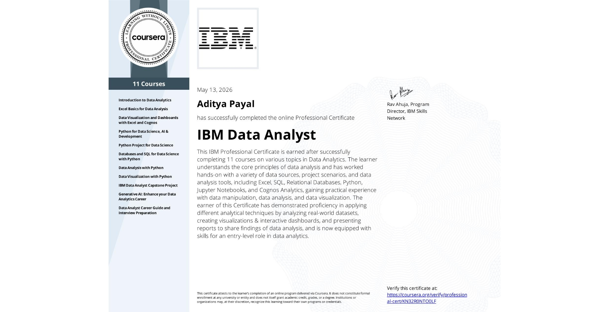
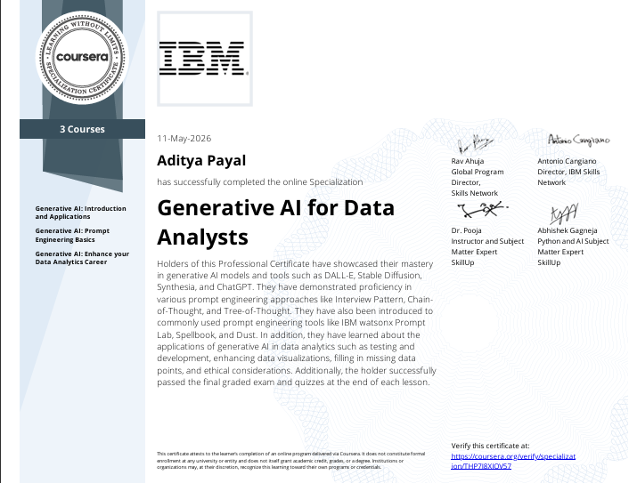
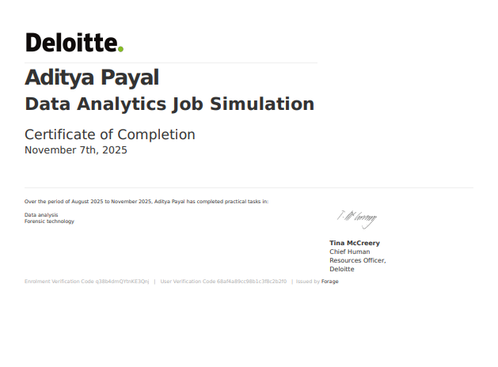
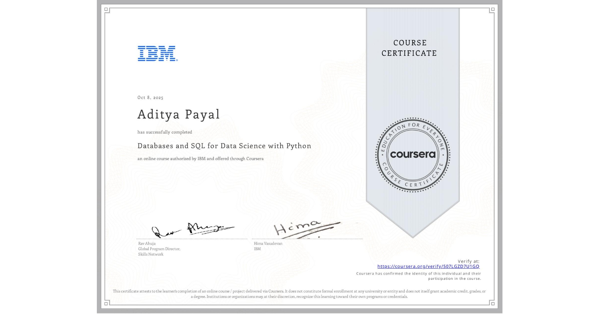
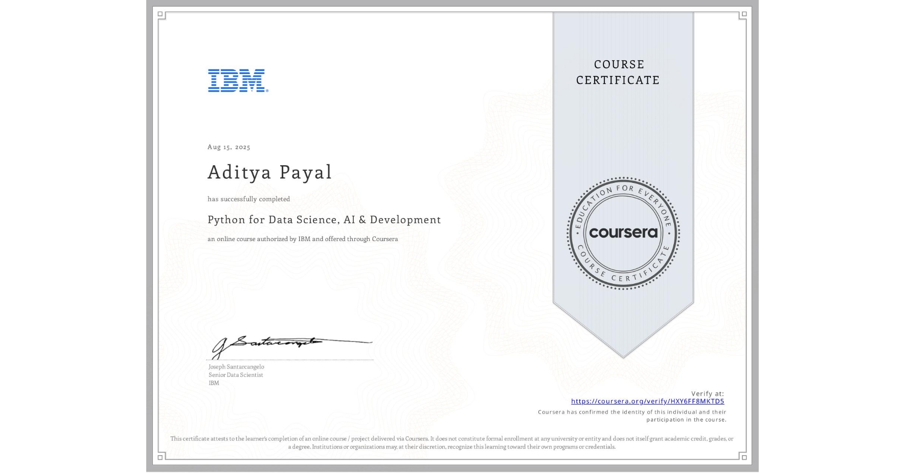

Aditya Payal
Data Analyst
Hi, I'm Aditya Payal, a Data Analyst with a strong desire to learn, grow, and turn data into meaningful insights. I have completed the IBM Data Analytics Professional Certificate and have built hands-on experience with SQL, Python, Excel, data visualization, exploratory data analysis, and AI-assisted analysis. I enjoy working with raw data, finding patterns, and presenting clear, business-friendly insights through dashboards and reports. I’m confident that my strong foundation in analytics, problem-solving, and generative AI tools can help me excel as a data analyst and contribute value in real-world business settings.
Download CVData-Driven and Dedicated
Aspiring Data Analyst Ready to Make an Impact
Hi, I'm Aditya Payal, a Data Analyst with a strong desire to learn, grow, and turn data into meaningful insights. I have completed the IBM Data Analytics Professional Certificate and have built hands-on experience with SQL, Python, Excel, data visualization, exploratory data analysis, and AI-assisted analysis. I enjoy working with raw data, finding patterns, and presenting clear, business-friendly insights through dashboards and reports. I’m confident that my strong foundation in analytics, problem-solving, and generative AI tools can help me excel as a data analyst and contribute value in real-world business settings.
Data-Driven and Business-Focused Data Analyst Turning Data into Action I am a data analyst with hands-on experience in SQL, Excel, Python, dashboarding, reporting, and exploratory data analysis. I enjoy working on business problems where data can improve decisions, simplify reporting, and uncover useful patterns. I have completed the IBM Data Analytics Professional Certificate and built projects across customer analytics, marketing analytics, reporting dashboards, and business insights. I also use AI tools and generative AI to improve analysis workflows, speed up research, and support smarter problem-solving.
LinkedIn Profile-
SQL
80% -
Power BI
75% -
Python
70% -
Excel
85%
Featured Work
Portfolio
Explore some of the analytics, automation, and dashboard projects I have built.
Output
Platforms
These are the platforms where you can explore my work, projects, and professional presence. GitHub is where I host my repositories and source code, LinkedIn is where I share my professional profile and career journey, and Instagram is where I share highlights from my journey and creative presence online.
Recent Articles
Achievements
-

IBM Data Analyst Professional Certificate
I completed the IBM Data Analyst Professional Certificate on 13 May 2026. This professional program helped me build job-ready skills in Excel, SQL, Python, data visualization, dashboards, and hands-on analytics projects. It strengthened my understanding of the complete data analysis workflow and gave me more confidence in building practical portfolio-ready work.
View certificate -

Generative AI for Data Analysts
I completed the Generative AI for Data Analysts certificate on 11 May 2026. This learning experience helped me understand how generative AI can support data interpretation, reporting, workflow improvement, and smarter insight generation. It also expanded my perspective on responsible AI usage and the growing role of AI in modern analytics work.
View certificate -

Deloitte Australia Data Analytics Job Simulation
I completed the Deloitte Australia Data Analytics Job Simulation on 07 November 2025. This simulation gave me practical exposure to real-world analytics tasks such as data cleaning, business interpretation, dashboard thinking, and communicating insights clearly. It helped me better understand how analytics skills are applied in a professional consulting environment.
View certificate -

Databases and SQL for Data Science with Python
I completed Databases and SQL for Data Science with Python on 08 October 2025. This course helped me strengthen my SQL fundamentals, database concepts, query writing, and the connection between database work and Python-based analysis. It gave me more confidence in handling structured data for analysis, reporting, and application workflows.
View certificate -

Python for Data Science and AI Development
I completed Python for Data Science and AI Development on 15 August 2025. This course strengthened my foundation in Python programming, including data structures, functions, logic building, and beginner-friendly data workflows. It played an important role in helping me use Python more confidently in analytics, automation, and AI-focused projects.
View certificate